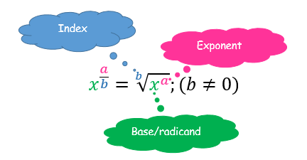
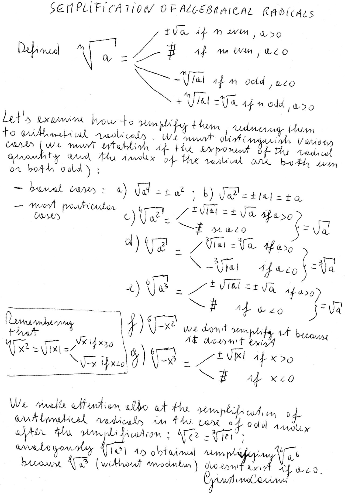
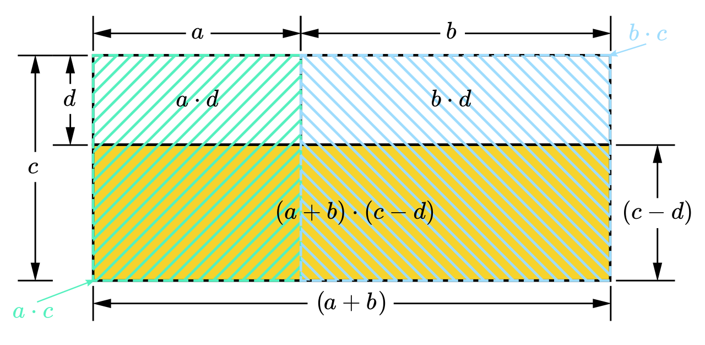
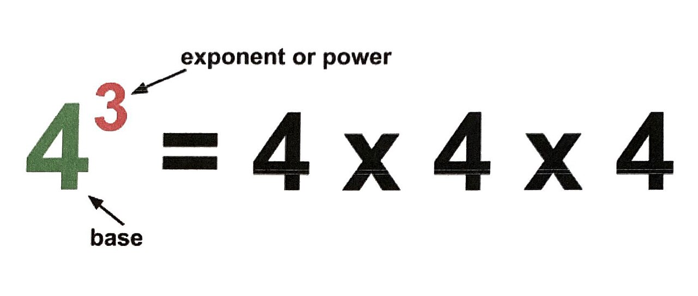
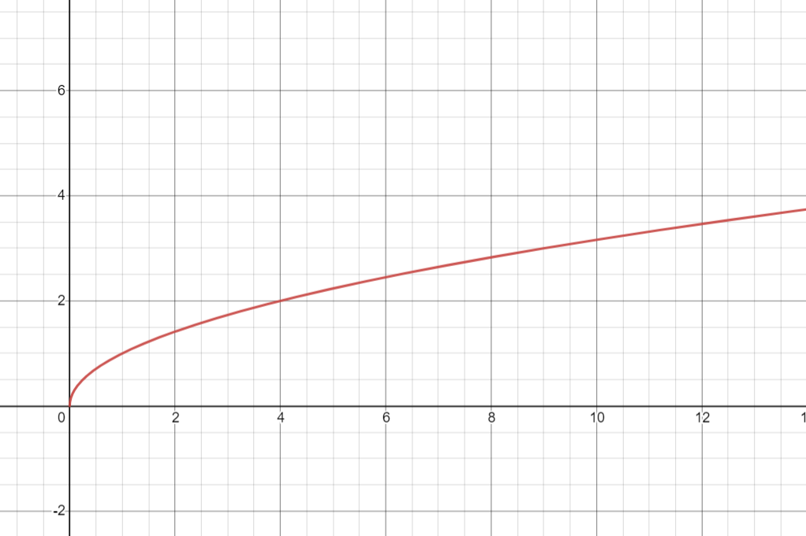

Radicals & Rational Exponents
A radical sign is just a question in disguise: √25 asks “what number, multiplied by itself, gives 25?” That is the whole idea, and everything in this chapter grows out of it. We will learn to read radicals, shrink them into their simplest form, add and multiply them the way we already add and multiply everything else, and clear them out of denominators. Then we will discover something genuinely useful: a radical is secretly an exponent, and once you see that, the exponent rules you already know do most of the work for you. We finish with radical equations, which come with a warning label — the algebra sometimes hands you an answer that is not actually an answer, and you have to know how to catch it.
By the end of this chapter you can
- Evaluate square roots and nth roots, and explain what the principal root means.
- State when an even-index radical is undefined in the real numbers, and why odd-index radicals are not.
- Simplify a radical by pulling out perfect-power factors, with numbers and with variables.
- Add, subtract, multiply, and divide radical expressions, including expressions that need FOIL.
- Rationalize a denominator with one term, and with two terms using a conjugate.
- Convert freely between radical form and rational-exponent form, and use exponent rules to simplify.
- Solve radical equations by isolating and raising both sides to a power.
- Identify and reject extraneous solutions by checking every answer in the original equation.
Section 1Radicals: square roots, nth roots, and simplifying

What a square root actually asks
The expression √25 is not a command to do something mysterious. It is a question: what non-negative number, times itself, equals 25? The answer is 5, because 5 × 5 = 25. That is all a square root is — running multiplication backwards.
Here is the one wrinkle that trips almost everybody up at first. The number 25 genuinely has two square roots: 5 works, and so does −5, because (−5)(−5) = 25. But the symbol √ is defined to hand back only the non-negative one, called the principal square root. So:
- √25 = 5 (not ±5 — the symbol picks the non-negative one)
- −√25 = −5 (the minus sign lives outside and is applied afterward)
- If you are solving x2 = 25, then x = ±5, because both genuinely satisfy the equation
Keep those two situations apart in your head. Evaluating a radical gives one answer. Solving a squared equation gives two. The ± appears when you introduce it while solving, not because the radical symbol secretly means ±.
One more rule worth memorizing now: √(x2) = |x|, the absolute value. Test it with x = −7: √((−7)2) = √49 = 7, which is |−7|, not −7. Squaring erased the sign, and the radical cannot put it back.
Beyond squares: nth roots
The little number sitting in the notch of the radical sign is the index. It tells you which root you are taking. If no index is written, it is understood to be 2 (a square root). The number under the sign is the radicand.
3√8 = 2 because 23 = 8. 4√81 = 3 because 34 = 81. 5√32 = 2 because 25 = 32. Same question, different power.
Now the important split, and it is entirely about whether the index is even or odd. An odd index is comfortable with negative radicands: 3√(−8) = −2, because (−2)3 = −8. An even index is not: √(−9) has no real answer, because no real number times itself gives a negative — positive × positive is positive, and negative × negative is also positive. So √(−9) is undefined in the real numbers.
| Index | Radicand positive | Radicand negative | Example |
|---|---|---|---|
| Even (2, 4, 6…) | One principal (positive) root | No real value | √36 = 6; √(−36) undefined (real) |
| Odd (3, 5, 7…) | One positive root | One negative root | 3√27 = 3; 3√(−27) = −3 |
It also pays to have a few perfect powers memorized, the way you know your times tables. Perfect squares: 1, 4, 9, 16, 25, 36, 49, 64, 81, 100, 121, 144, 169, 196, 225. Perfect cubes: 1, 8, 27, 64, 125, 216. Fourth powers: 1, 16, 81, 256. Fifth powers: 1, 32, 243. Recognizing these on sight is what makes the next skill fast instead of painful.
Simplifying: pull out the perfect powers
A radical is in simplified form when the radicand has no factor that is a perfect power matching the index. The tool is the product property: √(ab) = √a · √b, valid whenever both a and b are non-negative (for odd indexes it holds with no sign restriction at all).
Fully worked example: simplify √72.
| Step | What we do | Result |
|---|---|---|
| 1 | List factor pairs of 72 and hunt for perfect squares: 1·72, 2·36, 3·24, 4·18, 6·12, 8·9. Perfect squares present: 4, 9, 36. Take the largest, 36. | 72 = 36 · 2 |
| 2 | Rewrite the radicand as that product | √72 = √(36 · 2) |
| 3 | Split with the product property | = √36 · √2 |
| 4 | Evaluate the perfect square: √36 = 6 because 6 · 6 = 36 | = 6 · √2 |
| 5 | Write it in standard form (whole number in front) | = 6√2 |
| Check | √2 ≈ 1.41421, so 6√2 ≈ 6 × 1.41421 = 8.48528. And √72 ≈ 8.48528. | Matches — correct |
If you had grabbed the smaller perfect square 4 instead, you would get √72 = √4 · √18 = 2√18, and then you would notice 18 = 9 · 2 and keep going: 2 · 3√2 = 6√2. Same destination, one extra step. Taking the largest perfect square just saves you a lap.
With an index of 3: simplify 3√54. Now you hunt for perfect cubes, not squares. 54 = 27 · 2, and 27 = 33. So 3√54 = 3√(27 · 2) = 3√27 · 3√2 = 3 · 3√2. Be careful reading that last line: the small 3 tucked into the notch of the radical sign is the index, while the small 3 in “27 = 33” is an exponent. Same-looking mark, two different jobs — which is why we keep the raised dot in the answer rather than crowding the coefficient against the radical. Notice 9 is a factor of 54 too, but 9 is not a perfect cube, so it is useless here. The index decides what counts as “perfect.”
With variables: simplify √(50x3), assuming x ≥ 0. Break the radicand into a perfect-square part and a leftover part: 50 = 25 · 2, and x3 = x2 · x. So the radicand is 25x2 · 2x. Then √(50x3) = √(25x2) · √(2x) = 5x · √(2x) = 5x√(2x). The restriction x ≥ 0 matters: without it we would have to write 5|x|√(2x), and in fact 2x under an even radical already forces x ≥ 0 anyway.
- √a means the principal (non-negative) square root; solving x2 = a is what produces ±.
- The index says which root; the radicand is what is underneath. No index means 2.
- Even index + negative radicand = no real value; odd index handles negatives fine.
- Simplify by factoring out the largest perfect power that matches the index, then splitting with √(ab) = √a · √b.
Section 2Operations with radicals: adding, subtracting, multiplying, dividing

Adding and subtracting: only like radicals combine
This one is easier than it looks, because you already know the rule from a different context. You cannot combine 3 apples and 4 oranges into 7 of anything. In the same way, you can only add radicals that are like radicals — same index and same radicand.
3√5 + 4√5 = 7√5. Think of √5 as the “unit” and just count them: three of them plus four of them is seven of them. But √2 + √3 does not combine at all. It is already as simple as it gets, and writing it as √5 would be flatly wrong (√2 + √3 ≈ 1.414 + 1.732 = 3.146, while √5 ≈ 2.236).
The catch is that two radicals can look unlike and turn out to be like once you simplify them. That makes simplifying step zero of every addition problem.
Fully worked example: simplify √18 + √50 − √8.
| Step | What we do | Result |
|---|---|---|
| 1 | Simplify each radical first. 18 = 9 · 2, so √18 = √9 · √2 = 3√2 | √18 = 3√2 |
| 2 | 50 = 25 · 2, so √50 = √25 · √2 = 5√2 | √50 = 5√2 |
| 3 | 8 = 4 · 2, so √8 = √4 · √2 = 2√2 | √8 = 2√2 |
| 4 | Rewrite the whole expression | 3√2 + 5√2 − 2√2 |
| 5 | All three are like radicals, so combine the numbers in front: 3 + 5 − 2 = 6 | = 6√2 |
| Check | √18 ≈ 4.24264, √50 ≈ 7.07107, √8 ≈ 2.82843. Then 4.24264 + 7.07107 − 2.82843 = 8.48528, and 6√2 ≈ 8.48528. | Matches — correct |
Multiplying: multiply the outsides, multiply the insides
Multiplication is where radicals are friendly. The product property runs in both directions: √a · √b = √(ab). Coefficients out front multiply with each other; radicands multiply with each other. Then simplify whatever you land on.
Fully worked example: (2√3)(5√6).
- Step 1 — multiply the outside numbers: 2 × 5 = 10
- Step 2 — multiply the radicands: √3 · √6 = √18
- Step 3 — put them together: 10√18
- Step 4 — simplify √18: 18 = 9 · 2, so √18 = √9 · √2 = 3√2
- Step 5 — substitute back: 10 · 3√2 = 30√2
- Check: 2√3 ≈ 3.46410 and 5√6 ≈ 12.24745; their product is 42.42641. And 30√2 ≈ 42.42641. Correct.
A special case worth noticing: √3 · √3 = √9 = 3. A square root times itself simply undoes itself. That fact is the engine of the next section.
When there are two terms, FOIL exactly as you would with binomials. Fully worked: (√5 + 2)(√5 − 3).
- First: √5 · √5 = 5
- Outer: √5 · (−3) = −3√5
- Inner: 2 · √5 = 2√5
- Last: 2 · (−3) = −6
- Assemble: 5 − 3√5 + 2√5 − 6
- Combine the plain numbers: 5 − 6 = −1. Combine the like radicals: −3√5 + 2√5 = −1√5 = −√5
- Answer: −1 − √5
- Check: √5 ≈ 2.23607, so the factors are 4.23607 and −0.76393; their product is −3.23607. And −1 − 2.23607 = −3.23607. Correct.
Dividing: the quotient property
Division mirrors multiplication. The quotient property says (√a)/(√b) = √(a/b) for a ≥ 0 and b > 0. The restriction b ≠ 0 is not optional — you can never divide by zero, radicals or not.
Fully worked: (√50)/(√2). Combine under one radical: √(50/2) = √25 = 5. Check: √50 ≈ 7.07107 and √2 ≈ 1.41421; 7.07107 ÷ 1.41421 = 5.00000. Correct.
Fully worked with coefficients: (12√30)/(4√5). Divide the outside numbers: 12 ÷ 4 = 3. Divide the radicands: √(30/5) = √6. Result: 3√6. Check: 12√30 ≈ 65.72671, 4√5 ≈ 8.94427, quotient ≈ 7.34847; and 3√6 ≈ 7.34847. Correct.
| Operation | Rule | Condition | Example |
|---|---|---|---|
| Add / subtract | Combine coefficients of like radicals only | Same index and same radicand | 3√2 + 5√2 = 8√2 |
| Multiply | √a · √b = √(ab) | a, b ≥ 0 for even index | √6 · √2 = √12 = 2√3 |
| Multiply (two terms) | FOIL, then combine like radicals | Same as above | (√3+1)2 = 3 + 2√3 + 1 = 4 + 2√3 |
| Divide | (√a)/(√b) = √(a/b) | a ≥ 0, b > 0 | (√48)/(√3) = √16 = 4 |
| Never | √(a+b) ≠ √a + √b | — | √25 = 5, but √9 + √16 = 7 |
- Like radicals (same index, same radicand) add and subtract by combining coefficients; simplify first so hidden matches show up.
- Multiply coefficients with coefficients and radicands with radicands, then simplify the result.
- Two-term products use FOIL, and √a · √a = a.
- Division uses (√a)/(√b) = √(a/b) with b ≠ 0; radicals never distribute over + or −.
Section 3Rationalizing denominators, including conjugates

Why we bother
Rationalizing the denominator means rewriting a fraction so that no radical is left downstairs. The value of the fraction never changes — only its appearance. So why do it? Two honest reasons. First, it is the standard form textbooks, exams, and answer keys expect, so matching it saves you arguments about whether your answer is right. Second, it genuinely makes numbers easier to compare and to estimate by hand: 1/√2 makes you divide by a messy 1.41421, while the equivalent (√2)/2 only asks you to halve 1.41421.
The whole technique rests on one trick you have used since fractions began: multiplying by a cleverly disguised 1. Since (√7)/(√7) = 1, multiplying by it changes nothing about the value while changing everything about the form.
One term in the denominator
Fully worked example: rationalize 3/(√7).
| Step | What we do | Result |
|---|---|---|
| 1 | The denominator is √7. Multiplying it by √7 will clear it, since √7 · √7 = 7. | Multiplier: (√7)/(√7) |
| 2 | Multiply top and bottom by that fraction (which equals 1) | (3)/(√7) · (√7)/(√7) |
| 3 | Numerator: 3 · √7 = 3√7 | Top = 3√7 |
| 4 | Denominator: √7 · √7 = √49 = 7 | Bottom = 7 |
| 5 | Write the result; 3 and 7 share no common factor, so it is done | = (3√7)/7 |
| Check | 3/(√7) ≈ 3 ÷ 2.64575 = 1.13389. And (3√7)/7 ≈ 7.93725 ÷ 7 = 1.13389. | Matches — correct |
Simplify before you rationalize. Fully worked: 5/(√12). If you charge ahead and multiply by (√12)/(√12), you get (5√12)/12, and you still have to simplify √12 afterward. Cleaner to simplify first: √12 = √(4 · 3) = 2√3, so the fraction is 5/(2√3). Now multiply top and bottom by √3: the numerator becomes 5√3, and the denominator becomes 2 · √3 · √3 = 2 · 3 = 6. Answer: (5√3)/6. Check: 5/(√12) ≈ 5 ÷ 3.46410 = 1.44338, and (5√3)/6 ≈ 8.66025 ÷ 6 = 1.44338. Correct.
What if the index is not 2? Then you need enough copies to complete a perfect power. Fully worked: 1/(3√2). Multiplying by 3√2 alone gives 3√4 downstairs — still a radical. You need three 2s under the cube root, and you have one, so supply two more by multiplying by 3√4 (since 4 = 22). The denominator becomes 3√2 · 3√4 = 3√8 = 2, and the numerator becomes 3√4. Answer: (3√4)/2. Check: 1/(3√2) ≈ 1 ÷ 1.25992 = 0.79370, and (3√4)/2 ≈ 1.58740 ÷ 2 = 0.79370. Correct.
Two terms in the denominator: use the conjugate
When the denominator is something like 3 + √5, multiplying by √5 does not help — it just spreads the radical around. What you need is the conjugate: the same two terms with the sign between them flipped. The conjugate of 3 + √5 is 3 − √5, and the conjugate of √7 − 2 is √7 + 2.
The conjugate works because of the difference-of-squares pattern: (a + b)(a − b) = a2 − b2. The middle terms cancel, and squaring a square root destroys it. That is exactly what we want.
Fully worked example: rationalize 6/(3 + √5).
| Step | What we do | Result |
|---|---|---|
| 1 | Identify the conjugate of 3 + √5 by flipping the middle sign | Conjugate = 3 − √5 |
| 2 | Multiply top and bottom by (3 − √5)/(3 − √5) | (6)/(3+√5) · (3−√5)/(3−√5) |
| 3 | Numerator: distribute 6 across both terms → 6 · 3 = 18 and 6 · (−√5) = −6√5 | Top = 18 − 6√5 |
| 4 | Denominator, FOIL it out: 3·3 = 9; 3·(−√5) = −3√5; √5·3 = +3√5; √5·(−√5) = −5 | 9 − 3√5 + 3√5 − 5 |
| 5 | The two radical terms cancel (−3√5 + 3√5 = 0), leaving 9 − 5 | Bottom = 4 |
| 6 | Assemble the fraction | (18 − 6√5)/4 |
| 7 | Every term shares a factor of 2: 18 = 2·9, 6 = 2·3, 4 = 2·2. Divide it out. | = (9 − 3√5)/2 |
| Check | √5 ≈ 2.23607, so 6/(3+√5) ≈ 6 ÷ 5.23607 = 1.14590. And (9 − 6.70820)/2 = 2.29180 ÷ 2 = 1.14590. | Matches — correct |
A second one, with a radical on top too: rationalize (√7)/(√7 − 2). The conjugate is √7 + 2. Numerator: √7(√7 + 2) = √7 · √7 + 2√7 = 7 + 2√7. Denominator: (√7 − 2)(√7 + 2) = (√7)2 − 22 = 7 − 4 = 3. Answer: (7 + 2√7)/3. Check: √7 ≈ 2.64575, so the original is 2.64575 ÷ 0.64575 ≈ 4.09717; and (7 + 5.29150)/3 = 12.29150 ÷ 3 = 4.09717. Correct.
One caution about restrictions. When letters are involved, the denominator still cannot be zero. In (√x)/(√x − 2) we need x ≥ 0 for the radical to be real, and x ≠ 4 so the denominator is not zero. Rationalizing does not change those restrictions — carry them along.
- Rationalizing multiplies by a disguised 1, so the value is unchanged — only the form.
- For a single square root downstairs, multiply top and bottom by that radical; simplify the radical first if you can.
- For index n, supply whatever factors complete a perfect nth power (e.g. multiply 3√2 by 3√4).
- For a two-term denominator, multiply by the conjugate and use (a+b)(a−b) = a2 − b2; the denominator still may not be zero.
Section 4Rational exponents: converting between radical and exponent form

The bridge: a radical is an exponent
Here is the definition that makes this chapter suddenly easier: a1/n = n√a. A fractional exponent with 1 on top means “take the nth root.” So a1/2 = √a, a1/3 = 3√a, and a1/5 = 5√a.
That is not an arbitrary choice; it is forced. If we want the old power-of-a-power rule to keep working, then (a1/2)2 must equal a(1/2)·2 = a1 = a. So a1/2 has to be the number that squares to a — which is precisely √a. The notation was designed so that nothing you already know breaks.
When the top of the fraction is not 1, the rule extends naturally: am/n = n√(am) = (n√a)m. Read it as the denominator is the root, the numerator is the power. Some people remember it as “the root is in the basement.” Both orders give the same answer, but one is usually far less work — more on that in a moment.
| Radical form | Exponent form | Worked value |
|---|---|---|
| √a | a1/2 | √49 = 491/2 = 7 |
| 3√a | a1/3 | 3√125 = 1251/3 = 5 |
| n√a | a1/n | 4√81 = 811/4 = 3 |
| n√(am) = (n√a)m | am/n | 82/3 = (3√8)2 = 22 = 4 |
| 1/(n√a) | a−1/n | 16−1/2 = 1/√16 = 1/4 |
| 6√(x5) | x5/6 | — |
Evaluating, step by step
Fully worked example: evaluate 82/3.
| Step | What we do | Result |
|---|---|---|
| 1 | Read the fraction: denominator 3 = cube root; numerator 2 = square it | 82/3 = (3√8)2 |
| 2 | Take the root first: 3√8 = 2, because 2 · 2 · 2 = 8 | = 22 |
| 3 | Apply the power: 22 = 4 | = 4 |
| Other order | Power first: 82 = 64, then 3√64 = 4 (since 4 · 4 · 4 = 64) | Same answer, bigger numbers |
Now with a negative exponent: evaluate 32−3/5. A negative exponent means reciprocal, so step one is 32−3/5 = 1/(323/5). Next, the denominator 5 says fifth root: 5√32 = 2, because 2 · 2 · 2 · 2 · 2 = 32. Then the numerator 3 says cube it: 23 = 8. So 323/5 = 8, and the answer is 1/8. Notice the negative exponent moved the expression to the denominator; it did not make the answer negative.
All your exponent rules still apply
This is the real payoff. Once radicals are exponents, you do not need special radical rules — you use the exponent rules you already have: am · an = am+n, (am)/(an) = am−n, (am)n = amn, and (ab)n = anbn.
Fully worked: simplify √x · 3√x, for x ≥ 0. As radicals this looks stuck — different indexes, so they are not like radicals. Convert: √x = x1/2 and 3√x = x1/3. Multiplying means adding exponents: 1/2 + 1/3. Get a common denominator of 6: 1/2 = 3/6 and 1/3 = 2/6, so 3/6 + 2/6 = 5/6. Therefore the product is x5/6, which converts back to 6√(x5). Check with x = 64: √64 = 8 and 3√64 = 4, so the product is 32; and 645/6 = (6√64)5 = 25 = 32. Correct.
Fully worked: simplify (16x8)3/4, for x ≥ 0. Distribute the exponent to each factor: (16)3/4 · (x8)3/4. For the number: 163/4 = (4√16)3 = 23 = 8, since 2 · 2 · 2 · 2 = 16. For the variable, multiply exponents: 8 × (3/4) = 24/4 = 6, giving x6. Answer: 8x6. Check with x = 1: (16 · 1)3/4 = 8, and 8 · 16 = 8. Correct.
One restriction to respect: when the denominator of the exponent is even, the base must be non-negative for the result to be a real number. (−16)1/2 = √(−16) is not real, and (−16)1/4 is not either. Odd denominators are fine: (−27)1/3 = 3√(−27) = −3.
- a1/n = n√a, and am/n = n√(am) = (n√a)m — denominator is the root, numerator is the power.
- A negative rational exponent means reciprocal, not a negative answer: 16−1/2 = 1/4.
- Taking the root first keeps the arithmetic small.
- Every ordinary exponent rule works on rational exponents, which is how you multiply radicals of different indexes.
Section 5Radical equations: solving and checking for extraneous solutions

The strategy, and the warning
A radical equation is an equation with the variable underneath a radical. The plan is short: isolate the radical on one side, raise both sides to the power that matches the index, solve the ordinary equation that appears, and then — this step is not optional — check every answer in the original equation.
Why is checking mandatory here when it is merely good practice elsewhere? Because squaring both sides is a one-way street. Look at the false statement 3 = −3. Square both sides and you get 9 = 9, which is true. Squaring turned a lie into a truth. So when you square both sides of an equation, you may accidentally manufacture a solution that never satisfied the original. Such an impostor is called an extraneous solution. It is not a mistake in your algebra — it is a side effect of the method, and the only way to catch it is to test your answers.
There is a second, related reason. The symbol √ only ever outputs values that are zero or positive. So an equation like √x + 3 = 1, which rearranges to √x = −2, has no solution at all — no real number has a principal square root of −2. You can see this on the graph of y = √x: the curve lives entirely on or above the x-axis and never reaches down to −2.
A clean one, start to finish
Fully worked example: solve √(2x + 3) = 5.
| Step | What we do | Result |
|---|---|---|
| 1 | The radical is already alone on the left — nothing to isolate | √(2x + 3) = 5 |
| 2 | Square both sides. On the left, squaring undoes the square root; on the right, 52 = 25 | 2x + 3 = 25 |
| 3 | Subtract 3 from both sides: 25 − 3 = 22 | 2x = 22 |
| 4 | Divide both sides by 2: 22 ÷ 2 = 11 | x = 11 |
| 5 | Check in the original. Left side: √(2 · 11 + 3) = √(22 + 3) = √25 = 5. Right side: 5. | 5 = 5 — valid |
| Solution | x = 11 |
One where an impostor shows up
Fully worked example: solve √(x + 7) = x − 5.
| Step | What we do | Result |
|---|---|---|
| 1 | Radical is already isolated. Square both sides. Left: x + 7. Right: (x−5)2 = x2 − 5x − 5x + 25 = x2 − 10x + 25 | x + 7 = x2 − 10x + 25 |
| 2 | Move everything to one side: subtract x and subtract 7 from both sides. Right side becomes x2 − 10x − x + 25 − 7 | 0 = x2 − 11x + 18 |
| 3 | Factor: find two numbers multiplying to 18 and adding to −11. Those are −2 and −9, since (−2)(−9) = 18 and (−2) + (−9) = −11 | 0 = (x − 2)(x − 9) |
| 4 | Set each factor to zero | x = 2 or x = 9 |
| 5 | Check x = 9. Left: √(9 + 7) = √16 = 4. Right: 9 − 5 = 4. | 4 = 4 — valid |
| 6 | Check x = 2. Left: √(2 + 7) = √9 = 3. Right: 2 − 5 = −3. | 3 ≠ −3 — extraneous, reject |
| Solution set | x = 9 only |
You could have predicted the rejection before doing any checking. The left side, √(x + 7), is never negative, so the right side x − 5 cannot be negative either — that forces x ≥ 5. Since 2 < 5, the candidate x = 2 was doomed from the start. (The radicand also demands x + 7 ≥ 0, so x ≥ −7, but the tighter restriction x ≥ 5 is the one doing the work.)
Other flavors you will meet
Cube roots: solve 3√(x − 4) = 2. Cube both sides: x − 4 = 23 = 8, so x = 12. Check: 3√(12 − 4) = 3√8 = 2. Valid. Cubing is reversible in a way squaring is not, so odd-index equations rarely produce extraneous solutions — but check anyway, since checking also catches arithmetic slips.
A radical on each side: solve √(x + 5) = √(2x − 1). Square both sides: x + 5 = 2x − 1. Subtract x: 5 = x − 1. Add 1: x = 6. Check: √(6 + 5) = √11 and √(2 · 6 − 1) = √11. Valid.
Two radicals that will not fit on one side: solve √(x + 5) − √x = 1. Isolate one radical first: √(x + 5) = 1 + √x. Square both sides — on the right, (1 + √x)2 = 1 + 2√x + x. So x + 5 = 1 + 2√x + x. Subtract x from both sides: 5 = 1 + 2√x. Subtract 1: 4 = 2√x. Divide by 2: √x = 2. Square once more: x = 4. Check in the original: √(4 + 5) − √4 = √9 − 2 = 3 − 2 = 1. Valid, so x = 4. Yes, you sometimes have to square twice — that is normal.
- Isolate the radical, raise both sides to the index power, solve, then check in the original equation.
- Squaring both sides can create extraneous solutions, because squaring turns false statements like 3 = −3 into true ones.
- √(anything) is never negative, so if an isolated radical equals a negative number there is no solution.
- With two radicals, isolate one, square, isolate the survivor, and square again.
The chapter in one breath
- √a is the principal (non-negative) root; the index names the root and the radicand sits underneath, and √(x2) = |x|.
- Even index with a negative radicand has no real value; odd index handles negatives without complaint.
- Simplify by factoring out the largest perfect power matching the index, then splitting with √(ab) = √a · √b.
- Only like radicals add or subtract; multiplication and division combine radicands freely, and √(a+b) is never √a + √b.
- Rationalizing multiplies by a disguised 1; use the radical itself for one term and the conjugate for two, leaning on (a+b)(a−b) = a2 − b2.
- Rational exponents translate radicals into powers: am/n = (n√a)m — denominator is the root, numerator is the power.
- Once written as exponents, all the ordinary exponent rules apply, which is how you combine radicals with different indexes.
- Radical equations are solved by isolating and powering up, and every candidate must be checked because squaring manufactures extraneous solutions.
ReferenceWords worth knowing
A quick reference for the vocabulary in this chapter — skim it now, or circle back whenever a word slows you down.
- Conjugate
- The same two-term expression with the middle sign reversed; the conjugate of 3 + √5 is 3 − √5. Multiplying a pair of conjugates gives a2 − b2, which clears square roots.
- Cube root
- The root with index 3; 3√a is the number whose cube is a. Defined for negative numbers: 3√(−8) = −2.
- Even root
- Any root with an even index (2, 4, 6…). Requires a non-negative radicand to produce a real number.
- Extraneous solution
- A value produced by the solving process that does not satisfy the original equation; typically created by squaring both sides, and caught only by checking.
- Index
- The small number in the notch of the radical sign telling you which root to take. If none is written, it is 2.
- Irrational number
- A real number that cannot be written as a ratio of integers; √2 and √3 are irrational, and their decimals never terminate or repeat.
- Like radicals
- Radicals with the same index and the same radicand, such as 3√2 and 5√2. Only like radicals can be added or subtracted.
- Nth root
- The general root: n√a is the number that, raised to the nth power, gives a.
- Odd root
- Any root with an odd index (3, 5, 7…). Defined for every real radicand, positive or negative.
- Perfect cube
- A number that is some integer cubed: 1, 8, 27, 64, 125, 216… These are what you factor out under a cube root.
- Perfect square
- A number that is some integer squared: 1, 4, 9, 16, 25, 36, 49, 64… These are what you factor out under a square root.
- Principal square root
- The non-negative square root, and the only value the symbol √ returns. √25 = 5, never −5.
- Product property of radicals
- √(ab) = √a · √b (for non-negative a and b when the index is even). The engine of simplifying and multiplying.
- Quotient property of radicals
- (√a)/(√b) = √(a/b), with b ≠ 0. The engine of dividing radicals.
- Radical equation
- An equation in which the variable appears under a radical sign, such as √(2x + 3) = 5.
- Radical expression
- Any expression containing a radical sign, such as 6√2 or √(50x3).
- Radical sign
- The symbol √ itself, which instructs you to take a root.
- Radicand
- Whatever sits underneath the radical sign. In √(2x + 3), the radicand is 2x + 3.
- Rational exponent
- A fractional exponent. am/n means the nth root of a raised to the mth power — denominator is the root, numerator is the power.
- Rationalizing the denominator
- Rewriting a fraction so no radical remains in the denominator, by multiplying top and bottom by a form of 1.
- Simplified radical form
- A radical whose radicand contains no factor that is a perfect power matching the index, with no radical left in a denominator and no fraction left under the radical.
- Square root
- The root with index 2; √a is the non-negative number whose square is a.